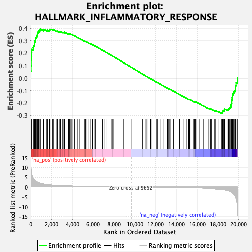
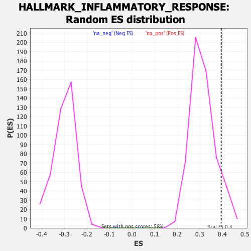

| | | Dataset | Test%20LTED%20wt |
| Phenotype | NoPhenotypeAvailable |
| Upregulated in class | na_pos |
| GeneSet | HALLMARK_INFLAMMATORY_RESPONSE |
| Enrichment Score (ES) | 0.3943738 |
| Normalized Enrichment Score (NES) | 1.2572964 |
| Nominal p-value | 0.09793814 |
| FDR q-value | 0.54501086 |
| FWER p-Value | 0.946 |
Table: GSEA Results Summary

Fig 1: Enrichment plot: HALLMARK_INFLAMMATORY_RESPONSE
Profile of the Running ES Score & Positions of GeneSet Members on the Rank Ordered List
| SYMBOL | RANK IN GENE LIST | RANK METRIC SCORE | RUNNING ES | CORE ENRICHMENT | | 1 | VIP | 2 | 13.319 | 0.0586 | Yes |
| 2 | NDP | 30 | 9.616 | 0.0995 | Yes |
| 3 | ABCA1 | 41 | 9.034 | 0.1388 | Yes |
| 4 | IL1R1 | 50 | 8.506 | 0.1759 | Yes |
| 5 | GNA15 | 98 | 6.464 | 0.2020 | Yes |
| 6 | CALCRL | 100 | 6.404 | 0.2301 | Yes |
| 7 | LYN | 228 | 4.527 | 0.2436 | Yes |
| 8 | ROS1 | 281 | 4.091 | 0.2590 | Yes |
| 9 | RNF144B | 360 | 3.614 | 0.2710 | Yes |
| 10 | TACR3 | 361 | 3.611 | 0.2869 | Yes |
| 11 | INHBA | 400 | 3.371 | 0.2998 | Yes |
| 12 | ADM | 457 | 3.130 | 0.3107 | Yes |
| 13 | CCR7 | 476 | 3.042 | 0.3232 | Yes |
| 14 | HPN | 572 | 2.713 | 0.3303 | Yes |
| 15 | PTGER4 | 604 | 2.650 | 0.3404 | Yes |
| 16 | FFAR2 | 635 | 2.564 | 0.3502 | Yes |
| 17 | CXCL8 | 643 | 2.548 | 0.3611 | Yes |
| 18 | PDE4B | 695 | 2.436 | 0.3692 | Yes |
| 19 | SGMS2 | 752 | 2.284 | 0.3764 | Yes |
| 20 | GPR132 | 879 | 2.071 | 0.3792 | Yes |
| 21 | EDN1 | 893 | 2.045 | 0.3875 | Yes |
| 22 | PCDH7 | 931 | 1.980 | 0.3944 | Yes |
| 23 | ATP2B1 | 1235 | 1.574 | 0.3860 | No |
| 24 | LDLR | 1281 | 1.535 | 0.3904 | No |
| 25 | ICAM1 | 1543 | 1.311 | 0.3830 | No |
| 26 | NLRP3 | 1618 | 1.255 | 0.3848 | No |
| 27 | NFKBIA | 1797 | 1.144 | 0.3808 | No |
| 28 | CSF3R | 1818 | 1.130 | 0.3848 | No |
| 29 | PTPRE | 1852 | 1.115 | 0.3880 | No |
| 30 | HBEGF | 1865 | 1.108 | 0.3923 | No |
| 31 | GCH1 | 1957 | 1.060 | 0.3923 | No |
| 32 | KLF6 | 2114 | 0.982 | 0.3887 | No |
| 33 | TNFSF9 | 2188 | 0.951 | 0.3892 | No |
| 34 | C5AR1 | 2524 | 0.831 | 0.3759 | No |
| 35 | SLC4A4 | 2594 | 0.810 | 0.3760 | No |
| 36 | MMP14 | 2809 | 0.744 | 0.3684 | No |
| 37 | SLC31A2 | 2867 | 0.728 | 0.3687 | No |
| 38 | LTA | 2888 | 0.723 | 0.3709 | No |
| 39 | HIF1A | 2907 | 0.716 | 0.3732 | No |
| 40 | RIPK2 | 3091 | 0.673 | 0.3668 | No |
| 41 | PIK3R5 | 3169 | 0.655 | 0.3658 | No |
| 42 | PSEN1 | 3220 | 0.643 | 0.3661 | No |
| 43 | SCN1B | 3223 | 0.642 | 0.3689 | No |
| 44 | GP1BA | 3595 | 0.570 | 0.3526 | No |
| 45 | LPAR1 | 3606 | 0.567 | 0.3546 | No |
| 46 | CD70 | 3640 | 0.561 | 0.3554 | No |
| 47 | SLC11A2 | 3709 | 0.549 | 0.3543 | No |
| 48 | ITGB8 | 3777 | 0.540 | 0.3533 | No |
| 49 | RHOG | 3874 | 0.523 | 0.3508 | No |
| 50 | EMP3 | 4031 | 0.498 | 0.3450 | No |
| 51 | ITGA5 | 4196 | 0.471 | 0.3388 | No |
| 52 | IRAK2 | 4505 | 0.430 | 0.3251 | No |
| 53 | BEST1 | 4700 | 0.405 | 0.3171 | No |
| 54 | IL1A | 5142 | 0.357 | 0.2963 | No |
| 55 | MEFV | 5234 | 0.346 | 0.2932 | No |
| 56 | P2RX4 | 5246 | 0.345 | 0.2942 | No |
| 57 | CCL22 | 5311 | 0.340 | 0.2924 | No |
| 58 | CDKN1A | 5505 | 0.318 | 0.2840 | No |
| 59 | PVR | 5703 | 0.296 | 0.2754 | No |
| 60 | FZD5 | 5778 | 0.289 | 0.2729 | No |
| 61 | STAB1 | 5936 | 0.273 | 0.2661 | No |
| 62 | SCARF1 | 5939 | 0.273 | 0.2672 | No |
| 63 | RAF1 | 5972 | 0.269 | 0.2668 | No |
| 64 | RELA | 6162 | 0.252 | 0.2583 | No |
| 65 | SELENOS | 6233 | 0.245 | 0.2559 | No |
| 66 | LAMP3 | 6899 | 0.192 | 0.2230 | No |
| 67 | RASGRP1 | 7136 | 0.173 | 0.2118 | No |
| 68 | CD14 | 7336 | 0.157 | 0.2024 | No |
| 69 | MXD1 | 7803 | 0.122 | 0.1794 | No |
| 70 | PTGER2 | 7851 | 0.119 | 0.1775 | No |
| 71 | KIF1B | 7996 | 0.109 | 0.1707 | No |
| 72 | ATP2C1 | 8917 | 0.049 | 0.1243 | No |
| 73 | IL4R | 9628 | 0.002 | 0.0883 | No |
| 74 | ACVR2A | 10720 | -0.067 | 0.0334 | No |
| 75 | IL10RA | 10984 | -0.084 | 0.0204 | No |
| 76 | SLC28A2 | 11149 | -0.095 | 0.0125 | No |
| 77 | SLC31A1 | 11168 | -0.097 | 0.0120 | No |
| 78 | KCNMB2 | 11503 | -0.117 | -0.0044 | No |
| 79 | NFKB1 | 11554 | -0.121 | -0.0064 | No |
| 80 | GNAI3 | 11643 | -0.125 | -0.0103 | No |
| 81 | P2RY2 | 12037 | -0.153 | -0.0295 | No |
| 82 | GPC3 | 12065 | -0.155 | -0.0302 | No |
| 83 | BTG2 | 12169 | -0.162 | -0.0347 | No |
| 84 | ABI1 | 12434 | -0.179 | -0.0473 | No |
| 85 | CD55 | 12724 | -0.199 | -0.0611 | No |
| 86 | CSF1 | 13150 | -0.229 | -0.0816 | No |
| 87 | IFNAR1 | 13155 | -0.230 | -0.0808 | No |
| 88 | IFNGR2 | 13264 | -0.237 | -0.0852 | No |
| 89 | ACVR1B | 13313 | -0.241 | -0.0866 | No |
| 90 | TNFSF10 | 13377 | -0.247 | -0.0887 | No |
| 91 | SEMA4D | 13471 | -0.253 | -0.0923 | No |
| 92 | LCK | 13727 | -0.273 | -0.1040 | No |
| 93 | LY6E | 14311 | -0.317 | -0.1321 | No |
| 94 | MYC | 14739 | -0.353 | -0.1522 | No |
| 95 | F3 | 14963 | -0.373 | -0.1619 | No |
| 96 | DCBLD2 | 15185 | -0.396 | -0.1713 | No |
| 97 | RGS16 | 15233 | -0.401 | -0.1719 | No |
| 98 | CXCR6 | 15377 | -0.414 | -0.1774 | No |
| 99 | TAPBP | 15642 | -0.443 | -0.1888 | No |
| 100 | IRF1 | 15712 | -0.451 | -0.1903 | No |
| 101 | ADRM1 | 15749 | -0.455 | -0.1901 | No |
| 102 | NAMPT | 15810 | -0.461 | -0.1911 | No |
| 103 | AHR | 15873 | -0.466 | -0.1922 | No |
| 104 | ATP2A2 | 16175 | -0.505 | -0.2052 | No |
| 105 | TLR2 | 16569 | -0.557 | -0.2227 | No |
| 106 | SLC1A2 | 17045 | -0.637 | -0.2440 | No |
| 107 | GABBR1 | 17124 | -0.651 | -0.2450 | No |
| 108 | NPFFR2 | 17262 | -0.680 | -0.2490 | No |
| 109 | SLC7A1 | 17373 | -0.706 | -0.2515 | No |
| 110 | IL18R1 | 17672 | -0.786 | -0.2631 | No |
| 111 | SLC7A2 | 17729 | -0.805 | -0.2624 | No |
| 112 | IL15 | 17791 | -0.823 | -0.2619 | No |
| 113 | SRI | 18000 | -0.896 | -0.2684 | No |
| 114 | ADORA2B | 18350 | -1.050 | -0.2815 | No |
| 115 | TPBG | 18373 | -1.069 | -0.2779 | No |
| 116 | OSMR | 18419 | -1.102 | -0.2753 | No |
| 117 | CYBB | 18428 | -1.105 | -0.2709 | No |
| 118 | MET | 18468 | -1.131 | -0.2679 | No |
| 119 | SPHK1 | 18483 | -1.138 | -0.2636 | No |
| 120 | NOD2 | 18516 | -1.163 | -0.2601 | No |
| 121 | CCL5 | 18618 | -1.242 | -0.2597 | No |
| 122 | PLAUR | 18637 | -1.257 | -0.2551 | No |
| 123 | NMI | 18649 | -1.267 | -0.2501 | No |
| 124 | AXL | 18872 | -1.514 | -0.2546 | No |
| 125 | IL15RA | 19001 | -1.710 | -0.2536 | No |
| 126 | EIF2AK2 | 19009 | -1.731 | -0.2463 | No |
| 127 | IRF7 | 19120 | -1.926 | -0.2434 | No |
| 128 | LIF | 19173 | -2.044 | -0.2371 | No |
| 129 | RTP4 | 19242 | -2.280 | -0.2305 | No |
| 130 | ADGRE1 | 19249 | -2.297 | -0.2206 | No |
| 131 | SELL | 19253 | -2.308 | -0.2106 | No |
| 132 | PTAFR | 19307 | -2.484 | -0.2024 | No |
| 133 | CD82 | 19332 | -2.563 | -0.1923 | No |
| 134 | BDKRB1 | 19335 | -2.579 | -0.1810 | No |
| 135 | TIMP1 | 19343 | -2.623 | -0.1699 | No |
| 136 | TACR1 | 19354 | -2.666 | -0.1586 | No |
| 137 | IL18 | 19388 | -2.824 | -0.1478 | No |
| 138 | IL2RB | 19398 | -2.877 | -0.1356 | No |
| 139 | TNFSF15 | 19445 | -3.054 | -0.1245 | No |
| 140 | BST2 | 19486 | -3.291 | -0.1121 | No |
| 141 | IFITM1 | 19612 | -4.157 | -0.1001 | No |
| 142 | TLR3 | 19681 | -4.946 | -0.0817 | No |
| 143 | EREG | 19683 | -4.970 | -0.0599 | No |
| 144 | SERPINE1 | 19743 | -5.704 | -0.0378 | No |
| 145 | CX3CL1 | 19870 | -10.164 | 0.0006 | No |
Table: GSEA details [plain text format]

Fig 2: HALLMARK_INFLAMMATORY_RESPONSE: Random ES distribution
Gene set null distribution of ES for HALLMARK_INFLAMMATORY_RESPONSE